항공무선통신사 (2018-03-10 기출문제)
1과목: 전파법규
1. 다음중 무선설비의 효율적 이용을 위하여 과학기술정보통신부장관의 승인을 얻어 위탁운용 또는 공동사용 할 수 있는 무선설비가 아닌 것은?
- 무선국의 안테나설치대
- 송신설비
- 무선국의 성능측정 설비
- 수신설비
(정답률: 74%)

2. 전파법령에 따라 무선국은 허가증에 적힌 사항의 범위에서 운용하여야 하나 그 이외에 통신할 수 있는 경우가 아닌 것은?
- 조난통신
- 긴급통신
- 안전통신
- 평문통신
(정답률: 87%)
3. 수색구조에 종사하는 항공기에 있어서 장거리 취항 비행을 행하는 항공기국이 사용하는 주파수로 맞는 것은?
- 108[MHz]
- 156.8[MHz]
- 156.525[MHz]
- 243.0[MHz]
(정답률: 77%)
4. 항공기국과 항공국간 또는 항공기국 상호간의 무선통신업무를 무엇이라 하는가?
- 항공무선항행업무
- 항공이동업무
- 항공무선통신업무
- 항공무선조정업무
(정답률: 60%)
5. 무선전화에 의한 경보신호는 교대로 송신하는 실질적인 정현파인 가청 주파수가 다른 2음으로 구성된다. 그 2음의 주파수는?
- 2,200[Hz], 1,000[Hz]
- 2,200[Hz], 1,300[Hz]
- 2,200[Hz], 1,500[Hz]
- 2,200[Hz], 1,800[Hz]
(정답률: 95%)
6. 다음 중 전파법의 목적이 아닌 것은?
- 전파의 효율적인 이용 및 관리
- 전파의 이용 및 전파에 관한 기술의 개발을 촉진
- 전파 관련 기관의 육성 및 지원
- 공공복리의 증진에 이바지
(정답률: 67%)
7. 항공기국은 당해 무선국에 설치되어 있는 각종 무선설비를 충분히 운용할 수 있고 해당 국가기술자격을 갖춘 1명을 배치하여야 한다. 이에 해당되지 않는 자격 종목은?
- 전파전자통신기사
- 육상무선통신사
- 전파전자통신산업기사
- 항공무선통신사
(정답률: 83%)
8. 조난통신을 발신하여야 할 사태에 이르러 기장이 필요한 명령을 하지 아니하거나 무선통신업무에 종사하는 자로 서 그 명령을 받고 지체 없이 이를 발신하지 아니한 자에 대한 벌칙은?
- 10년 이하의 징역 또는 1억원 이하의 벌금
- 5년 이하의 징역 또는 5천만원 이하의 벌금
- 3년 이하의 징역 또는 3천만원 이하의 벌금
- 1년 이하의 징역 또는 1천만원 이하의 벌금
(정답률: 79%)
9. 무선국의 허가를 받은 자가 준공기한(기한을 연장한 경우에는 그 기한)이 지난 후 몇 일이 지날 때까지 준공신고를 마치지 아니한 경우에 무선국의 개설허가를 취소할 수 있는가?
- 20일
- 30일
- 40일
- 50일
(정답률: 93%)
10. 다음 중 전파형식의 등급표시에서 기본 특성이 아닌 것은?
- 주반송파의 변조형식
- 주반송파를 변조시키는 신호의 특성
- 신호의 항목
- 송신할 정보의 형태
(정답률: 72%)
11. 다음 중 무선국 검사 시 허가 또는 신고사항 등과 일치 하는지 11. 여부를 대조·확인하는 대조검사 항목에 포함되지 않는 것은?
- 시설자
- 설치장소
- 무선종사자 배치
- 안테나공급전력
(정답률: 68%)
12. 전자파가 인체에 미치는 영향을 고려하여 무선설비 등에서 발생하는 전자파에 대한 기준을 정하여 고시하는 사항과 관계없는 것은?
- 전자파 인체보호기준
- 전자파 강도 측정기준
- 전자파 흡수율 측정기준
- 전자파 인체내성 측정기준
(정답률: 86%)
13. 다음 중 무선국 개설허가의 유효기간으로 옳은 것은?
- 이동국 및 육상국 : 5년
- 실험국 및 실용화시험국 : 4년
- 일반지구국 및 항공지구국 : 3년
- 방송국 및 유선방송국 : 2년
(정답률: 72%)
14. 다음 중 무선국 재허가 시 무선국 허가사항을 재지정할 수 있는 사항이 아닌 것은?
- 전파의 형식
- 무선국의 목적
- 안테나공급전력
- 운용허용시간
(정답률: 70%)
15. 전파형식의 등급표시에 있어 기본 특성의 셋째 기호(송신할 정보형태) 중 ‘전화’를 나타내는 문자는?
- A
- C
- E
- F
(정답률: 86%)
16. 다음 중 수신설비가 충족하여야 할 조건으로 옳지 않은 것은?
- 선택도가 적을 것
- 감도는 낮은 신호입력에서도 양호할 것
- 내부잡음이 적을 것
- 수신주파수는 운용범위 이내일 것
(정답률: 92%)
17. 항공기에 대하여 그 착륙강하 직전 또는 착륙강하 중에 수평과 수직의 유도를 주고, 정점에서 착륙기준점까지의 거리를 표시하는 무선항행방식을 무엇이라 하는가?
- 전방향표지시설(VOR)
- 계기착륙시설(ILS)
- 로칼라이저
- 마아커비콘
(정답률: 77%)
18. 다음 중 국제민간항공기구에서 정한 국제항공통신업무의 분류로 옳지 않은 것은?
- 항공고정업무
- 항공이동업무
- 항공무선항행업무
- 항공무선측위업무
(정답률: 63%)
19. 항공기의 서면 또는 자동의 전기통신일지의 보존기간으로 옳은 것은?
- 최소 30일 동안
- 최소 60일 동안
- 최소 180일 동안
- 최소 1년 동안
(정답률: 64%)
20. 다음 중 무선전화를 사용하는 항공기국의 식별표시로 옳지 않은 것은?
- 장소의 지리적 명칭과 무선국의 기능을 표시하는 단어의 조합
- 항공기의 소유자를 표시하는 단어를 전치한 호출부호
- 항공기에 할당된 공식 등록기호에 상당하는 글자의 조합
- 정기항공로를 표시하는 단어와 그 다음에 이어지는 항공편 식별번호
(정답률: 61%)
2과목: 기초전파공학
21. 내압이 낮은 다이오드를 높은 전압에서 사용할 때 각 다이오드의 내압을 합한 크기가 사용전압보다 크게 얻고자 할 때 사용되는 접속방법은 무엇인가?
- 직렬접속
- 병렬접속
- 직·병렬접속
- 평행접속
(정답률: 59%)
22. 송신기에서 신호의 전송을 위해 고주파에 저주파를 포함시키는 과정을 무엇이라 하는가?
- 변조
- 복조
- 발진
- 증폭
(정답률: 47%)
23. 다음 중 SSR(Secondary Survellance Radar) 및 ATC(Air Traffic Control) 트랜스폰더에 대한 설명으로 틀린 것은?
- SSR에서 발사하는 질문 펄스를 모드 펄스(Mode Pulse)라 한다.
- SSR에서는 1,090[MHz]의 질문 전파를 발사 한다.
- ATC 트랜스폰더에서의 응답 펄스를 코드 펄스(Code Pulse)라 한다.
- ATC 트랜스폰더는 할당된 응답코드 및 고도를 응답한다.
(정답률: 61%)
24. 일반적으로 공항부근에 국한되는 짧은 범위를 Cover하는 시설로서 Approach Control, Departure Control 및 공항부근에 있는 항공기의 Vectoring에 이용되는 시설은단, 고도정보는 얻을 수 없다.)
- ASR
- SSR
- PAR
- ASDE
(정답률: 51%)
25. ILS(Instrument Landing System)에 운용되는 주파수의 범위로 옳은 것은?(오류 신고가 접수된 문제입니다. 반드시 정답과 해설을 확인하시기 바랍니다.)
- 108.10 ~ 111.95[MHz]
- 229.15 ~ 235.00[MHz]
- 338 ~ 415[MHz]
- 960 ~ 1,215[MHz]
(정답률: 36%)
26. 다음 항공기의 무선, 항법, 위성설비 중 항공기에서 전파를 발사하지 않는 설비는?
- HF, WX-Radar
- VHF, RADAR
- DME, LRRA
- ADF, VOR
(정답률: 59%)
27. 다음 중 항공기내에서 무선 LAN 접속 서비스 사용 시 신용카드 및 개인정보를 보호하기 위해 사용하는 암호화 기법은?
- Firewall
- SSL(Secure Socket Layer)
- NAT(Network Address Translation)
- DSP(Digital Signal Processing)
(정답률: 57%)
28. 다음 중 위성 지구국 안테나의 성능 조건에 해당하지 않는 것은?
- 저이득이어야 한다.
- 잡음 온도가 낮아야 한다.
- 고지향성을 가져야 한다.
- 광대역성을 가져야 한다.
(정답률: 64%)
29. 다음 중 연산 증폭기(OP Amp)의 특징으로 알맞은 것은?
- 전압 이득이 작다.
- 통화 주파수 대역이 넓다.
- 출력 임피던스가 높다.
- 입력 임피던스가 낮다.
(정답률: 50%)
30. 1[kHz] 신호파에 916[kHz] 반송파를 진폭변조(AM)할 때, 피변조파에 포함되어 있지 않은 주파수는?
- 1[kHz]
- 915[kHz]
- 916[kHz]
- 917[kHz]
(정답률: 60%)
31. 다음 중 디지털 변조 방식에서 정보 전송상 주파수(스텍트럼)의 이용 효율이 가장 좋은 방식은?
- 16QAM(Quadrature Amplitude Modulation)
- FSK(Frequency Shift Keying)
- BPSK(Binary Phase Shift Keying)
- QPSK(Quadrature Phase Shift Keying)
(정답률: 63%)
32. 다음 중 항공기의 항법설비 중 기상레이다 송신기의 전력측정을 하기 위한 방법이 아닌 것은?
- 볼로미터브리지전력계법
- 수부하법
- 열양계법
- 방향성 결합기에 의한 방법
(정답률: 50%)
33. 다음 중 가종 코일형 계기눈금에 대한 설명으로 맞는 것은?
- 균등하다.
- 대수형이다.
- 제곱형이다.
- 지수형이다.
(정답률: 56%)
34. VOR(VHF Omnidirectional Radio Range)을 계기비행에 사용하기 위하여 수신기를 점검할 경우, 공항내의 지정된 지점에서의 최대허용 오차는?
- ±2°
- ±4°
- ±6°
- ±10°
(정답률: 51%)
35. 다음 중 전리층에 대한 설명으로 틀린 것은?
- 전리층 주에 D층과 E층은 주로 낮에만 존재한다.
- 전리층 중에서 F층이 전파전달에 가장 큰 영향을 준다.
- 전리층 내부에서 특정 주파수의 전파는 회절된다.
- 전리층에 의해 심하게 영향을 받는 주파수대는 3~30[MHz]이다.
(정답률: 49%)
36. 계기착륙시설 보조용으로 사용되는 무지향표지시설(Compass Locator)의 기술기준상 통달거리는?
- 10 ~ 25해리(Nautical Mile)
- 10 ~ 40해리(Nautical Mile)
- 10 ~ 50해리(Nautical Mile)
- 10 ~ 100해리(Nautical Mile)
(정답률: 55%)
37. 주간에 비하여 야간의 전리층 밀도와 위치는?
- 밀도는 높고, 높이는 높아진다.
- 밀도는 약해지고, 높이는 높아진다.
- 밀도는 약해지고, 높이는 낮아진다.
- 주간과 야간이 같다.
(정답률: 57%)
38. 한쪽 방향으로만 전파를 통과시키고 반대 방향으로는 통과시키지 않는 부품을 무엇이라 하는가?
- 아이솔레이터(Isolator)
- 도파관(Waveguide)
- 저항감쇠기(Attenuator)
- 무반사종단기(Terminator)
(정답률: 60%)
39. 정류회로의 리플(Ripple) 전압이란?
- 정류된 직류전압
- 무부하시의 전압
- 부하시의 전압
- 정류된 전압의 교류분
(정답률: 41%)
40. 3[Ω]의 저항을 가지고 있는 도선에 3[A]의 전류를 흐르게 하려면 몇 [V]의 전압이 필요한가?
- 1[V]
- 3[V]
- 6[V]
- 9[V]
(정답률: 64%)
3과목: 통신보안
41. 다음 중 통신보안 활동의 수행자세가 아닌 것은?
- 자발적인 실천의지 필요
- 보안활동의 생활화
- 획일적이고 통제위주의 대책 수립
- 책임한계의 명확성
(정답률: 56%)
42. 다음 중 통신보안이 필요한 이유로 가장 적절한 것은?
- 통신내용 중 비밀에 속하는 내용이 제3자에게 누설되는 것을 방지하기 위하여
- 무선통신의 신속성이 결여되는 취약성이 있기 때문에
- 과학기술정보통신부장관이 무선국을 매년 1회 이상 정기적으로 검사하므로
- 통신기술의 발전으로 정보가 신속히 전달되므로
(정답률: 63%)
43. 다음 중 유선전화의 통신보안상 취약점이 아닌 것은?
- 수화기를 접속시켜 손쉽게 통화내용을 엿들을 수 있다.
- 교환업무상 고의적인 도청이 가능하다.
- 유도장치를 접속하면 통화내용의 도청이 가능하다.
- 무선통신에 비하여 도청 가능성이 현저히 낮다.
(정답률: 62%)
44. 다음 중 무선통신에 대한 통신보안의 취약성과 관련이 없는 것은?
- 통화내용 도청이 용이하다.
- 원거리 통신이 어렵다.
- 도청이 되더라도 도청되고 있음을 인지하기 어렵다.
- 신속성, 간편성, 편리성으로 이용자들이 선호한다.
(정답률: 56%)
45. 다음은 통신정보와 통신보안을 설명한 것이다. 통신정보의 특징은?
- 양성적인 보호수단
- 적은 인력과 예산 소요
- 효과측정이 곤란
- 방어수단
(정답률: 51%)
46. 각 기관에서 공통으로 사용할 암호자재는 누가 제작·배부하는가?
- 국가정보원장
- 국립전파연구원장
- 중앙전파관리소장
- 한국방송통신전파진흥원장
(정답률: 59%)
47. 무선통신업무 종사자가 통신보안교육을 받아야 할 주기는?
- 5년에 1회
- 5년에 2회
- 4년에 1회
- 3년에 1회
(정답률: 52%)
48. 다음 중 해상에서의 음어자재 파기 방법으로 부적절한 것은?
- 소각하여 원형을 소멸시킨다.
- 알아 볼 수 없도록 파기하여 바다에 던진다.
- 긴박할 경우 원형 그대로 바다에 던져 버린다.
- 긴급사태의 상황에 따라 반납용, 미래용, 현재용 순으로 파기 한다.
(정답률: 58%)
49. 다음 중 중요한 내용으로 판단되어 반드시 전달하여야 할 필요가 있는 경우의 조치로 가장 안전한 방법은?
- 등기우편으로 보낸다.
- 유선전화로 보낸다.
- 인편으로 보낸다.
- 무선전신으로 보낸다.
(정답률: 51%)
50. 무선인쇄전신 통신 시 통신보안 대책으로 가장 적당한 것은?
- 자격 취득자간에만 소통한다.
- 송신출력을 최대화 한다.
- 운용자는 통신제원을 수시로 확인한다.
- 비밀사항은 보안자재로 조립하여 사용한다.
(정답률: 57%)
4과목: 영어
51. 조난신호에 관한 ICAO 규정으로 옳지 않은 것은?
- A distress message sent via data link which transmits the intent of the word "MAYDAY"
- A radiotelephony distress signal consisting of the spoken word "MAYDAY"
- A parachute flare showing a green light
- A signal made by radiotelegraphy or by any other signaling method consisting of the group "SOS"
(정답률: 71%)
52. 다음 문장의 괄호 안에 들어갈 수준에 해당하는 것은?
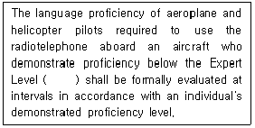
- 3
- 4
- 5
- 6
(정답률: 73%)
53. 다음 중 ICAO규정에서 정의한 용어로 알맞은 것은?
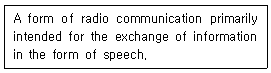
- Radiotelegraph
- Radio station
- Radiotelephony
- Radio frequency
(정답률: 72%)
54. 다음 문장의 괄호 안에 들어갈 가장 적합한 것은?
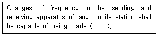
- as well as possible
- as far as possible
- as long as possible
- as rapidly as possible
(정답률: 69%)
55. 다음은 어떤 용어에 대한 설명인가?
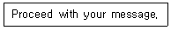
- Approved
- Contact
- Go Ahead
- Say Again
(정답률: 75%)
56. 조난신호에 관한 ICAO 규정으로 괄호 안에 적합한 것은?
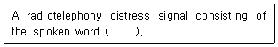
- MAYDAY
- HELP
- URGENT
- PAN PAN
(정답률: 71%)
57. 다음 문장의 괄호 안에 들어갈 알맞은 내용은?
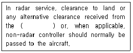
- Ground Controller
- Flight Controller
- Radar Controller
- Aerodrome Controller
(정답률: 59%)
58. 항공통신용어 “Affirmative"가 뜻하는 것과 가장 가까운 표현은?
- Yes
- No
- I am right
- Roger
(정답률: 69%)
59. Aviation radio message에서 number "1"을 올바르게 발음한 것은?
- one
- wun
- wan
- win
(정답률: 80%)
60. 다음 문장의 의미로 쓰이는 항공통신용어는 무엇인가?
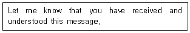
- Roger
- Acknowledge
- Wilco
- Affirmative
(정답률: 76%)
61. What is a definition of "ROGER" in aviation radio phrase?
- I have received all of your last transmission.
- My transmission is ended and I expect a response from you.
- Let me know that you have received and understand this message.
- This conversation is ended and no response is expected.
(정답률: 73%)
62. 다음 괄호 안에 들어갈 단어로 알맞은 것은?
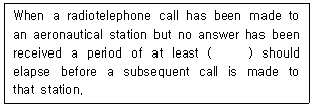
- five seconds
- ten seconds
- thirty seconds
- one minute
(정답률: 62%)
63. 다음 중 영문통화표의 설명으로 옳지 않은 것은?
- 0 : NADAZERO
- 2 : BISSOTWO
- 소수점 : PERIOD
- 종지부 : STOP
(정답률: 76%)
64. Choose the wrong ICAO phonetic alphabet.
- A : Alfa
- G : Golf
- O : October
- T : Tango
(정답률: 80%)
65. Choose the wrong ICAO phonetic alphabet.
- F : Foxtrot
- J : Juliett
- R : Roma
- L : Lima
(정답률: 78%)
66. 다음 문장의 밑줄 친 단어와 같은 의미를 가지는 것은?
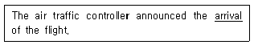
- Landing
- Captain
- Leaving
- Number
(정답률: 80%)
67. 항공통신 용어 중 관제사가 “주파수 변경을 허가 한다‘를 지시할 때 사용하는 용어로 알맞은 것은?
- FREQUENCY UNUSABLE
- REMAIN THIS FREQUENCY
- CHANGE TO BY FREQUENCY
- FREQUENCY CHANGE APPROVED
(정답률: 75%)
68. 다음 문장의 괄호 안에 들어갈 가장 적합한 것은?
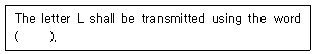
- Lima
- Lost
- Latin
- Letter
(정답률: 80%)
69. 다음 문장의 밑줄 친 부분에 알맞은 단어는?
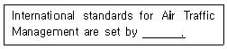
- UN
- ICAO
- IAEA
- NOTAM
(정답률: 79%)
70. 다음 내용이 설명하는 항공용어는 무엇 인가?
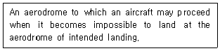
- Alternate aerodrome
- Supplement aerodrome
- Amendment aerodrome
- International aerodrome
(정답률: 73%)